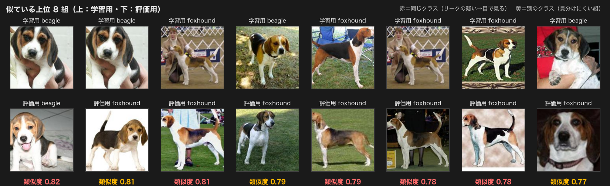

理由1 先に決める：評価用を見ながら選ぶと、正解率が実力より高く出る
- 評価用 30 枚（1クラス 10 枚）では、写真を入れ替えるだけで正解率が 10 ポイントほど動く（教員の検証）。どの写真が入るかの運で、正解率が上下する
- 例：設定を 10 通り試し、評価用の正解率が一番高かった設定を選ぶ。選んだ設定には「実力」と「評価用の写真とのたまたまの相性」の両方が入っている。新しい写真で測り直すと、正解率は下がる
- 対策：選ぶのは学習用で行い、評価用は選んだ後に1回だけ測る。演習2 でも、ラベル文3通りは学習用で比べ、評価用は選んだ1つで1回だけ測る
理由2 第14回まで変えない：毎回同じ評価用で測らないと、回どうしを比べられない
- 例：第8回は 60.0%、第9回は 85.0% だったとする。第9回で評価用を撮り直していたら、上がった理由が「モデルが良くなった」のか「評価用が簡単になった」のか分からない
- 評価用が同じなら、正解率の違いはモデルの違いだけから来る。第8回の基準値と、第9〜14回の各モデルを同じ物差しで比べられる
- 評価用の一覧と指紋は
results/c2_split.csv に記録する。第9回からは、評価用の写真が1枚でも変わっているとノートブックが止まる
理由3 評価用に入れてはいけない写真がある：今日しか撮り直せないので、今日点検する
| 入れてはいけない写真 | なぜ困るか | 演習1での対策 |
|---|
| 学習用とほぼ同じ写真（連写・同じ物・同じ背景）＝リーク | モデルが学習で見た写真とほぼ同じ写真で測ることになる。答えを見てからテストを受けるのと同じで、正解率が実力より高く出る | 似ている度合いを計算し、評価用ごとに一番似ている組を上位8組まで目で見て、点検表を書く |
| 学習用と同じ部屋・同じ照明で撮った写真 | 実際に使う場面（別の日・別の場所・別の明るさ）より簡単な写真で測ることになり、正解率が実力より高く出る | 評価用は別の部屋・別の照明で撮る。別の個体（別の1本のペン）があれば使う |
理由3 の教員の検証（ペン：適当に置く・芯が出ている・机と平行に置く）：学習用は木の机で木目と平行に、評価用は灰色の机で机の端と平行に置いた。評価用の机には木目がないので、DINOv2 に最後の層だけを学習しても「平行」のクラスは評価用 40 枚中 11 枚しか当たらなかった（全体 58.8%）。評価用を別の机で撮ったから、学習用と評価用の手がかりのずれが見つかった。
演習1のゴール：自分の評価用が学習用と「別物」になっていることを確かめて、第14回まで使う評価用を決める。撮り直せるのは今日だけ。
| 節 | やること |
|---|
| (1) | 写真をそろえる（長い辺 256 画素の JPEG に。元の写真は書き換えない） |
| (2) | 自分でコードを1行書く：学習済みモデル DINOv2 で写真を特徴ベクトルにし、学習用と評価用のすべての組のコサイン類似度を1行で求める |
| (3) | 評価用の写真ごとに一番似ている学習用の写真を選び、似ている順に 8 組を目で見る。同じクラスどうし → リークの疑い。別のクラスどうし → 見分けにくい組 |
| (4) | 点検表を書く。問題があれば評価用を撮り直して (1) から（今日のうちなら直してよい） |
| (5) | 評価用を決めて記録する（results/c2_split.csv に写真の一覧と指紋を残す。第9回からは、評価用の写真が1枚でも変わっていると止まる） |
sim = f_tr @ f_ev.T # (2) で書く1行（長さ 1 の特徴どうしの内積 ＝ コサイン類似度）

(3) の実行例（教員の確認用データ 犬3種）。上が学習用、下が評価用。自分の写真で作った同じ形の図が、スライド ② の材料になる
教員の検証：同じ写真を加工したものの多くは 0.85 以上だが、寄る・傾けると 0.74 まで下がる。別の写真の 99% は 0.69 以下。よく似た別の写真も 0.80 前後になる → 上位 8 組は類似度によらず目で見る。